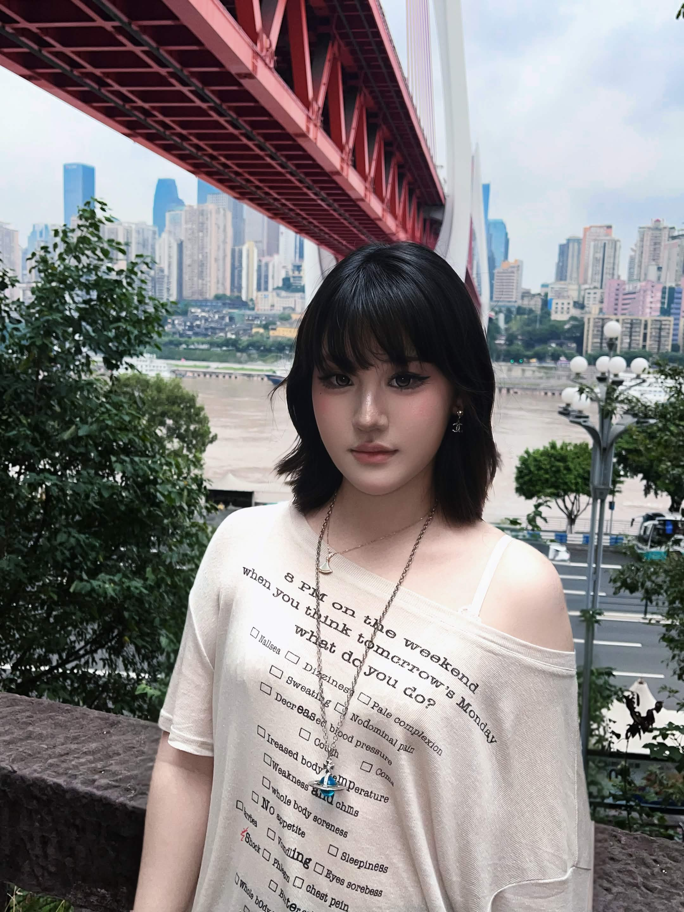

Get to know me! ♡

ME! ♡I'm a University of California, Irvine student interested in how people interact with technology and how design can make everyday experiences more meaningful.
I enjoy exploring digital products, UX research, prototyping, and serious games. I value curiosity, collaboration, and clear communication.
Outside class, I enjoy playful illustration, storytelling, and discovering creative ideas.